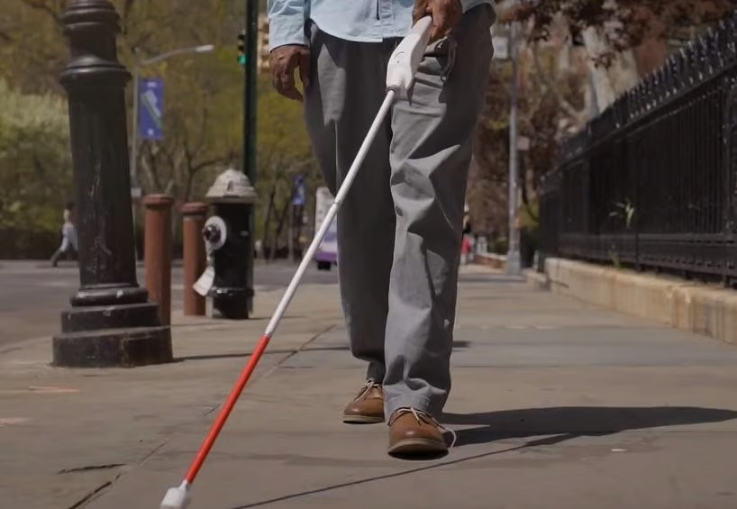

Presentación

El bastón inteligente desarrollado por el Instituto Mexicano del Seguro Social (IMSS) representa un avance significativo en la tecnología de asistencia para personas con discapacidad visual. Este proyecto busca no solo facilitar la movilidad de sus usuarios, sino también promover su independencia y calidad de vida. Equipado con sensores avanzados, el bastón puede detectar obstáculos en el entorno, alertando al usuario a través de vibraciones y sonidos, lo que les permite caminar de manera más segura.
El IMSS ha trabajado para diseñar un dispositivo que responda a las necesidades reales de sus usuarios. La creación de este bastón inteligente no solo se centra en su funcionalidad, sino que también considera el diseño ergonómico y la facilidad de uso, garantizando que sea accesible para una amplia variedad de usuarios.
A medida que la tecnología avanza, el IMSS se compromete a mejorar las herramientas que empoderan a las personas con discapacidad, asegurando que puedan participar plenamente en la sociedad y disfrutar de una vida más activa y autónoma.
Beneficios
El dispositivo "Kaná", desarrollado por el IMSS para el bastón blanco, aporta importantes beneficios a la movilidad y seguridad de las personas con discapacidad visual. Al incorporar sensores ultrasónicos, permite detectar obstáculos a nivel de la cintura y el torso, áreas que los bastones convencionales no alcanzan. Esto reduce significativamente el riesgo de accidentes al sortear objetos elevados y obstáculos que de otra forma serían difíciles de identificar, especialmente en entornos desconocidos.
Otro beneficio clave es su sistema de alerta por vibración, que permite al usuario recibir advertencias sin interferir con su sentido del oído. Esto resulta esencial para quienes dependen de su audición para orientarse en espacios públicos. Además, el dispositivo se adapta ergonómicamente al bastón blanco, lo que permite una integración fácil y cómoda en la rutina diaria sin requerir un equipo adicional o difícil de manejar.
El dispositivo también tiene el potencial de ser una herramienta accesible y escalable, gracias a la patente obtenida. Esto significa que, en un futuro, podría ser implementado a mayor escala y estar disponible para muchas personas en distintas regiones, promoviendo una mayor independencia para quienes viven con discapacidad visual.
Características
1. Sensores Ultrasónicos: Kaná está equipado con tecnología de sensores ultrasónicos que detecta obstáculos a nivel de la cintura y el torso, cubriendo zonas no alcanzadas por los bastones blancos convencionales y alertando sobre obstáculos elevados, como balcones y letreros.
2. Sistema de Alerta por Vibración: El dispositivo avisa al usuario mediante vibraciones, una forma de notificación que no interfiere con el sentido auditivo, vital para la navegación de personas con discapacidad visual. Solo se emiten alertas sonoras para indicar el nivel de carga de la batería, manteniendo así el entorno auditivo limpio.
3. Diseño Ergonómico y Ligero: Kaná se integra fácilmente al bastón blanco tradicional, y su diseño es ligero y cómodo, asegurando que el usuario pueda usarlo en su día a día sin afectar el manejo del bastón
4. Certificación de la NASA: El dispositivo ha alcanzado el nivel nueve en la Escala de Madurez Tecnológica de la NASA (TRL), lo que confirma su eficacia y confiabilidad en pruebas reales y abre posibilidades de fabricación y comercialización en el futuro
5. Validación en Entornos Reales: Kaná ha sido probado en la vida diaria, mostrando beneficios como facilitar el uso de transporte público, mejorar la movilidad y reducir los riesgos de golpes y accidentes, especialmente en espacios desconocidos o de acceso complejo
Por qué este invento?
Existen varios dispositivos de asistencia para personas con discapacidad visual en el mercado, como WeWALK o UltraCane, algunos de los cuales incluyen bastones con sensores de detección de obstáculos a nivel del suelo o incluso aplicaciones móviles que emiten alertas sobre el entorno. Sin embargo, el bastón Kaná del IMSS se destaca porque ofrece una cobertura completa desde el suelo hasta la altura del torso, algo que otros dispositivos no suelen proporcionar. Mientras que muchos bastones tradicionales solo permiten detectar obstáculos en el suelo, Kaná es capaz de advertir sobre elementos elevados como letreros o balcones, gracias a sus sensores ultrasónicos.
He elegido el bastón Kaná para destacar su combinación de tecnología de sensores y diseño ergonómico, que ofrece una alternativa más completa en comparación con otros dispositivos. Su uso de vibración para notificar obstáculos permite una experiencia de navegación mucho más natural, especialmente útil en entornos ruidosos. Además, cuenta con una validación en la Escala de Madurez Tecnológica de la NASA, lo que asegura su funcionalidad y confiabilidad en el mundo real, superando a muchos dispositivos de ayuda similares.
Para más detalles sobre el bastón Kaná y cómo ha sido diseñado para cubrir estas necesidades, puedes consultar este artículo detallado.